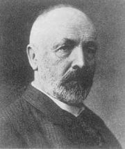
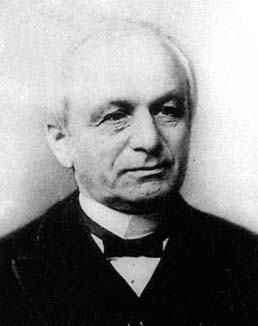
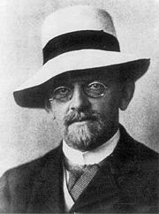
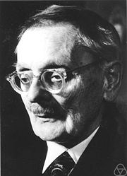
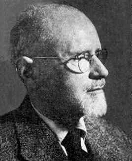

| Choisissez votre langue ! | Choose your language ! |
La théorie des ensembles fut élaborée à la fin du 19° siècle par le mathématicien allemand Georg Cantor.
Ce dernier s'est heurté à l'hostilité d'une partie de ses contemporains emmenés spécialement par Kronecker.
Son point de vue a fini par s'imposer tardivement avec la reconnaissance de David Hilbert.
Nous n'exposons pas ici la théorie de Cantor en elle même mais seulement son langage et les notations actuelles.
Les principaux résultats (comparaison des infinis) seront présentés dans les pages consacrées aux bijections.
| Georg Cantor (1845/1918-DE) | Leopold Kronecker (1823/1891-DE) | David Hilbert (1862/1943-DE) |
|  |  |  |
La théorie initiale a été par la suite formalisée et axiomatisée. Ce fut essentiellement le travail de Ernst Zermelo et Abraham Fraenkel.
| Ernst Zermelo (1871/1953-DE) | Abraham Fraenkel (1891/1965-DE/IS) |
|  |  |
Set theory was developed at the end of the 19th century by the German mathematician Georg Cantor.
The latter encountered the hostility of some of his contemporaries, led especially by Kronecker.
His point of view ended up winning late with the recognition of David Hilbert.
We do not expose Cantor's theory in itself here, but only its language and current notations.
The main results (comparison of infinities) will be presented in the pages devoted to bijections.
| Georg Cantor (1845/1918-DE) | Leopold Kronecker (1823/1891-DE) | David Hilbert (1862/1943-DE) |
The initial theory was subsequently formalized and axiomatized. It was mainly the work of Ernst Zermelo and Abraham Fraenkel
| Ernst Zermelo (1871/1953-DE) | Abraham Fraenkel (1891/1965-DE/IS) |
|
Création Gilles Dubois
Created by Gilles Dubois
|
Janvier 2022
January 2022
|
Version mobile Jquery
Mobile Jquery version
|